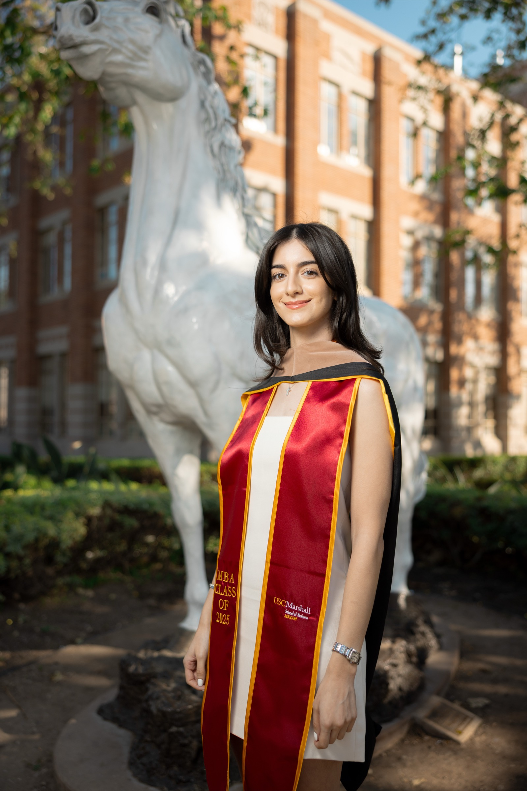

USC Photo Spot
Traveler Horse Statue
Traveler Horse Statue
Graduation Photos
Professional graduation photos at Traveler Horse Statue. Expert lighting, relaxed vibes, 24-hour delivery.
Professional graduation photos at Traveler Horse Statue. Expert lighting, relaxed vibes, 24-hour delivery.
USC Photo Spot

The Traveler statue near the Los Angeles Memorial Coliseum embodies the spirit of USC athletics and tradition. The dynamic bronze horse and rider captured mid-charge create an energetic, powerful backdrop that makes your graduation portraits feel bold and celebratory. It is a departure from the typical columns-and-libraries graduation photo, and that is exactly the point.
The statue sits in an open area on the south side of campus, slightly removed from the main pedestrian pathways. This works in your favor. While Tommy Trojan draws the biggest crowds, Traveler is often nearly empty, giving you time to explore different angles and compositions without waiting. The open surroundings also mean cleaner backgrounds and more room for group shots.
The horse and rider are positioned dynamically, which lends energy to your photos even in static poses. I shoot from low angles to emphasize the statue's drama, placing you alongside it so the composition feels balanced between the charging horse and your confident, celebratory stance. Wider shots that capture the full statue with the Coliseum visible in the background tell the complete USC athletic story.
Late afternoon is the sweet spot for this location. Between 4pm and 5:30pm, the open area catches golden hour light that wraps around both you and the statue. The warm tones enhance the bronze surface of Traveler and give your skin a healthy, sun-kissed glow. My off-camera lighting adds fill to keep the details sharp even as the natural light gets dramatic.
I typically pair Traveler with Tommy Trojan and the Steps of Troy for clients who want a mix of USC's most recognizable landmarks. The three are connected by a short walk along Trousdale Parkway and Exposition Boulevard.
4pm to 5:30pm
Low to Moderate
Tommy Trojan, Steps of Troy
Portfolio
Pricing
Per person
Per person
Per person
FAQ
The Traveler statue is located near the Los Angeles Memorial Coliseum on the south side of the USC campus, close to Exposition Boulevard.
Much less than Tommy Trojan or Doheny Library. The slightly off-campus location means fewer groups, giving you a more private, relaxed session.
Between 4pm and 5:30pm. The open area gets beautiful golden hour light that enhances the bronze statue and creates warm, flattering portraits.
Ready for stunning graduation photos at Traveler Horse Statue? Book your session and get your raw photos within 24 hours.
Book Your SessionExplore More